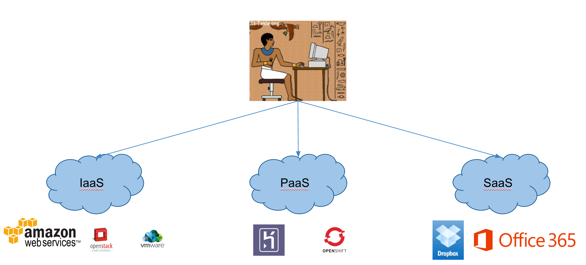

Introduction to DevOps
Alexandre Nuttinck - 27 / 10 / 2018
alexandre.nuttinck@cetic.be
Cloud Computing - Service models
|
Aéropole de Charleroi-Gosselies Avenue Jean Mermoz 28 B-6041 Charleroi - Belgique
|
SST - Introduction to DevOps
|